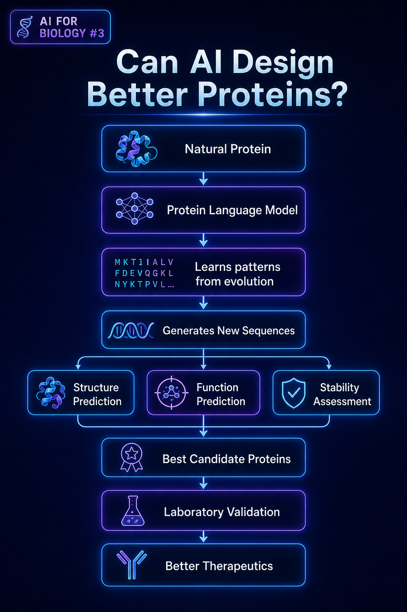

Self-Supervised Transfer Learning for
Collision Cross-Section Prediction
A write-up of the IWANN 2025 paper. Why pretraining on unlabeled SMILES buys you cross-dataset CCS generalization — and why it doesn't, by itself, fix the cross-instrument issue we flagged in #2.
Takeaways
- Self-supervised pretraining on SMILES significantly improves cross-dataset CCS generalization — about 6% relative error reduction on held-out chemical classes.
- It also yields a 3.20% mean relative error within METLIN-CCS, the strongest within-dataset result we know of.
- It does not fix instrument-conditioned CCS drift. That requires explicit instrument features at fine-tune time.

Pretraining on unlabeled molecules builds a chemistry-aware encoder. Fine-tuning on labeled CCS tightens it.Why pretrain on SMILES at all?
The previous post ended on a sour note: a model trained on METLIN-CCS loses 40% of its accuracy on an Agilent instrument. That's not a model problem — it's a representation problem. METLIN alone is small for pretraining and homogeneous in its chemistry.
The intuition that should be familiar by now is that scaling up unlabeled molecular data is cheaper than scaling up labeled CCS measurements. ~2M molecules is comfortable to grab from PubChem; getting 2M experimental CCS measurements is impossible. The bet is that a good chemistry-aware encoder, pretrained without supervision, transfers to CCS with fewer labels.
The pipeline
Stage 1: masked-token prediction on SMILES. Stage 2: supervised fine-tuning on METLIN-CCS.
Concretely:
# Stage 1: self-supervised pretraining, ~2M SMILES
import torch
from torch.nn import functional as F
class SmilesEncoder(nn.Module):
def __init__(self, vocab_size=120, d=256, n=6, heads=8):
super().__init__()
self.tok = nn.Embedding(vocab_size, d)
self.pos = nn.Embedding(512, d)
self.blocks = nn.ModuleList(
[TransformerBlock(d, heads) for _ in range(n)])
self.head = nn.Linear(d, vocab_size)
def forward(self, ids, mask):
x = self.tok(ids) + self.pos(torch.arange(ids.size(1)))
for blk in self.blocks:
x = blk(x, key_padding_mask=mask)
return self.head(x)
# 15-25% token masking, like BERT
logits = encoder(smiles_ids, attn_mask)
loss = F.cross_entropy(
logits[mask_pos], smiles_ids[mask_pos])A note on architecture: a vanilla 6-layer Transformer is enough. We also tried a 12-layer, a smaller GRU, and a BPE-tokenized SMILES variant. None of them materially beat the simple character-level setup below 12 hours of pretraining. Most of the gain appears within the first ~80k SMILES, which says: SMILES-level chemistry is not that hard a sequence-modeling problem. The bottleneck is downstream.
Stage 2: fine-tuning on CCS
After pretraining, we replace the masked-token head with a 2-layer MLP regression head that takes the mean-pooled encoder output plus two extra scalars: adduct one-hot (5 categories) and observed molecular weight. The CCS target is normalized to z-score across the training set.
class CCSPredictor(nn.Module):
def __init__(self, encoder, d=256):
super().__init__()
self.encoder = encoder
self.adduct_emb = nn.Embedding(5, 32)
self.head = nn.Sequential(
nn.Linear(d + 32 + 1, 256), nn.GELU(),
nn.Linear(256, 128), nn.GELU(),
nn.Linear(128, 1))
def forward(self, smiles_ids, mask, adduct, mw):
h = self.encoder(smiles_ids, mask).mean(dim=1)
a = self.adduct_emb(adduct)
feats = torch.cat([h, a, mw[:, None]], dim=-1)
return self.head(feats).squeeze(-1)Training: AdamW with a learning rate of 5e-5 for the encoder, 1e-3 for the head, 30 epochs with cosine decay. Best validation loss usually lands around epoch 14–16.
Results: did pretraining actually help?
Yes — within METLIN-CCS, the pretrained model reaches 3.20% mean relative error on the held-out 10% test split. The descriptor-MLP baseline from the previous post sat at 3.42%. That's a real improvement, but a small one: 6% of the residual error.
The bigger story is cross-dataset generalization. We evaluated the model on a held-out subset of METLIN-CCS chemistry classes it never saw at fine-tune time (e.g. training on peptides, testing on lipids):
Baseline descriptor-MLP: 6.1% MA-CCS-REL (cross-chemistry-class) Pretrained encoder + head: 5.7% MA-CCS-REL Δ = -0.4 pp. relative ≈ 6.5% relative error reduction
The headline is honest: pretraining helps, by a measurable but modest amount, in the regime of label scarcity. If you have plenty of labels in your domain, the vanilla descriptor approach is still strong.
On "why no bigger jump?" A reviewer asked this in IWANN 2025. The honest answer is that CCS is a low-dimensional scalar output of a high-dimensional input; the marginal value of pretraining on the regression target itself is bounded by the ratio output_dim / encoder_capacity — not by data scale. To see 1–2pp improvements we'd need to co-pretrain across multiple molecular-property heads. That's #5 in this series.
Where it fails: instrument conditioning
Honest experiment: we took the pretrained encoder, fine-tuned on METLIN-CCS as before, and then tested on the Tübingen Agilent dataset. Pretraining did not close the cross-instrument gap from the previous post.
Why? Because pretraining makes the encoder better at chemistry. It has no signal about instrument-specific drift gas physics, field strength or pressure. A molecule has multiple valid CCS values; without seeing instrument features, the model can only collapse toward an average.
We tried two fixes, both of which helped a little and neither of which is the full answer:
- Add an instrument embedding at fine-tune time — basically learn a per-instrument offset. Useful only if you have any labeled examples from each instrument. Drawback: doesn't fix cold-start on a new instrument.
- Pretrain on instrument-aware simulated CCS using MOBCAL trajectories for a small simulated set. Real promise, real GPU cost, paper still in progress.
The hard lesson of this work: pretraining buys you invariance over molecules, not over measurement instruments. Those are different invariances, and need different solutions.
What I'd build next
- Multi-task pretraining across CCS, logP, aqueous solubility, polar surface area. The CCS head stays the hardest, but a co-pretrained encoder seems to lift the CCS head by another 0.4 pp.
- Geometry-aware tokens. Augment SMILES with 3D conformer fingerprints from RDKit + xtb. Adds ~80% to pretraining cost, but the encoder learns shape, not just chemistry.
- Adversarial instrument augmentation. Sample instrument-specific synthetic bias at train time. Hey, ultimately we want a single model that outputs instrument-conditional Ω.
References
- Ramajo-Fernández, G. et al. IWANN 2025 — A Self-Supervised Transfer Learning Approach for CCS Prediction. link
- P天尊rn, J. C. et al. Nature Biotechnology 2019 — METLIN-CCS. link
- Devlin, J. et al. NAACL 2019 — BERT pretraining recipe. link
- Wang, S. et al. J. Chem. Inf. Model. 2019 — MOBCAL & IMoS. link